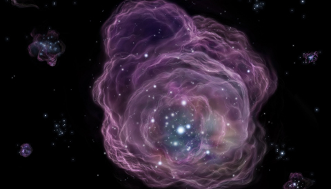

research
first stars#
Born in the pristine hydrogen gas of the early universe, the first generation of stars (also known as Population III, or Pop III, stars) are believed to be very different from the stars we see today. In order to condense to high densities and form stars, clumps of gas need to radiate away their thermal energy (such that gravitational collapse can beat out the pressure support). In the local universe (for basically every star we’ve observed), this ‘cooling’ of the gas is governed by the “heavy” elements produced by previous generations of stars. Pop III stars, however, are not so fortunate. In the early universe, the gas is too cold to excite hydrogen and cooling can therefore only occur inefficiently through molecular hydrogen, or H2. This results in stars thought to be tens to hundreds of times the mass of our Sun. At such large masses, they lived short, few million year lives, which, in some cases, ended in superluminous supernova explosions (SNe), releasing heavy elements and enriching their interstellar environments, setting the stage for more complex structures and later generations of stars to form.

Artist’s rendition of a Pop III star (source: National Astronomical Observatory of Japan)
Before any enrichment, the formation of early stars crucially depends on the presence of molecular hydrogen in a dark matter (DM) halo. Therefore, any processes that affect the H2 content of a DM halo will in turn affect the ability of that halo to form stars. There are several key processes believed to significantly affect the H2 fraction in a halo—the relic velocity between baryons and DM in the early universe, the buildup of a photodissociating UV background, and the development of a photo-ionizing and -heating X-ray background. The competition between all of these effects sets the pop III star formation rate in a given DM halo over time.
These processes, while all relating to the star formation process in different ways, can all be parameterized in terms of a single quantity: the minimum dark matter halo mass for stars to form. I used a series of simple models for these various effects to generate an analytic estimate for this mass scale. I can then fold this estimate into a semi-analytic model for star formation to understand how these processes will affect global, potentially observable quantities, such as the star formation rate density. For more details, see our paper!
early black holes#
The advent of the James Webb Space Telescope (JWST) has presented a number of exciting puzzles that have challenged our understanding of the early universe. One of these is a striking overabundance of bright sources in the first billion years relative to pre-JWST expectations, and a number of theoretical models have been introduced to explain what we’ve seen. In kind, JWST observations have also revealed a widespread population of active black holes during the Epoch of Reionization. Inspired by these two discoveries, we explored the possibility that a ‘hidden’ population of active BHs could account for the excess luminosity seen in some of these ‘universe-breaking’ bright galaxies at cosmic dawn. Long story short, we found that if a few percent of bright galaxies host relatively low luminosity active BHs, this could boost the luminosity of the galaxies enough to explain the overabundance problem while also keeping the BHs faint enough that they wouldn’t be detected morphologically (thereby ‘hiding’ them in photometry). For more about what requirements this would set on early BHs, check out our paper!
galaxies#
I have also worked on galaxy simulations—specifically searching for so-called ‘prolate rotators’ in the IllustrisTNG (TNG) cosmological simulation suite. Prolate rotation is an observational phenomenon wherein massive, cigar-shaped, elliptical galaxies are observed to rotate around their long axes (i.e., the spin and shape major axes are coincident). Using the TNG simulations, we analyzed the evolution of massive galaxies to (1) find a robust way to identify prolate rotators and (2) figure out how they formed. To answer the first question, we developed a new set of quantities to classify galaxies based on the rate-of-change of their angular momentum (AM) and major (long ellipsoidal) axes over time, which we termed the “reorientation rates” of these axes. Using this time-averaged classification, we found that roughly 2% of our almost 4000-galaxy sample exhibited regular (read: consistent) prolate rotation, a behavior distinct from galaxies that might temporarily appear to be masquerading as prolate rotators. With the prolate rotators located, we then traced back the merger history of the galaxies to observe how they formed. Our investigation demonstrated that stable prolate rotation seemed to result from disk galaxies experiencing radial mergers along the direction of their internal AM, effectively stretching the disk into a spinning cigar! For more details about this work, see the paper.
publications#
A list of my publications: -S. Hegde, M. M. Wyatt, S. R. Furlanetto, 2024 A hidden population of active galactic nuclei can explain the overabundance of luminous z > 10 objects observed by JWST
- S. Hegde, S. R. Furlanetto, 2023, A self-consistent semi-analytic model for Population III star formation in minihalos
- S. Hegde, G. L. Bryan, S. Genel, 2022, Reorientation Rates of Structural and Kinematic Axes in Simulated Massive Galaxies and the Origins of Prolate Rotation
- S. Hegde, M. G. Bobra, P. Scherrer, 2018, Classifying Signatures of Sudden Ionospheric Disturbances